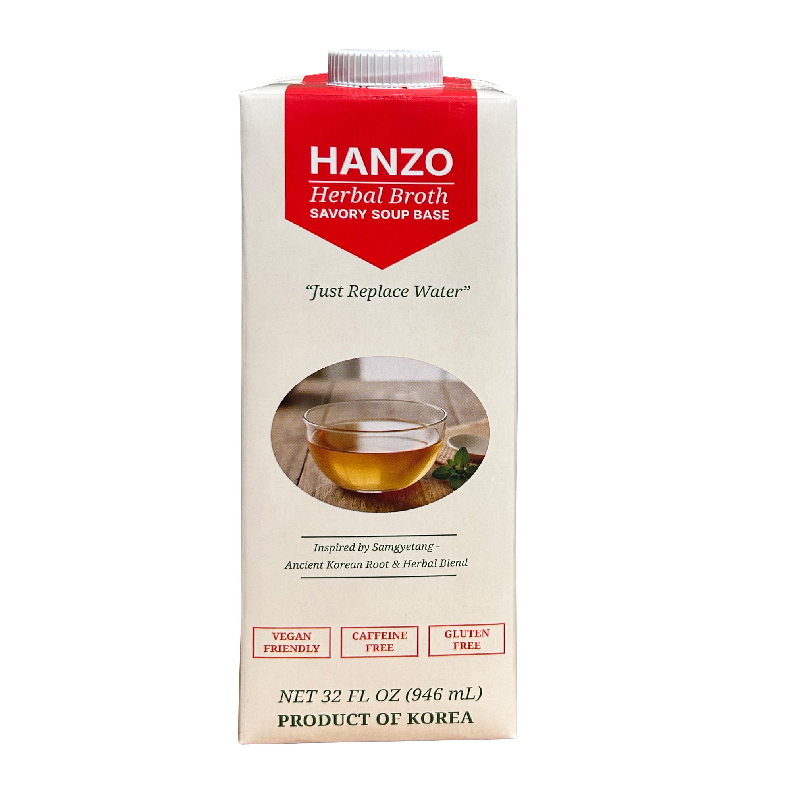

01 · Sip
Enjoy it your way.
Serve chilled or warm gently on the stovetop or in a microwave-safe cup. Enjoy as-is, or dilute 1:1 for a lighter taste.

Ready-to-use Korean herbal broth
One mild, savory broth for sipping and cooking.
Made with five traditional botanicals, HANZO brings Korean-inspired herbal character to everyday American kitchens. Enjoy it warm or chilled, or replace water or stock in soups, stews, noodles, rice, meat, and seafood dishes.
Nutrition values are per 1 cup (240 mL) serving. Refer to the package for complete ingredient, allergen, and Nutrition Facts information.
One carton, two rituals
Use HANZO the way that fits your day—simple enough for a cup, versatile enough for the kitchen.
01 · Sip
Serve chilled or warm gently on the stovetop or in a microwave-safe cup. Enjoy as-is, or dilute 1:1 for a lighter taste.
02 · Cook
Use it in place of water or stock for soups, stews, rice, grains, noodles, braises, meat, and seafood dishes.
Everyday versatility
HANZO adds mild herbal and savory depth while helping reduce gamey meat odors and strong seafood aromas.
Five botanicals
HANZO combines five botanicals selected for a balanced, mild, and savory profile:
Simple nutrition
Four 1-cup servings per carton, with straightforward nutrition information.
Use & storage
See HANZO in action
A quick look at the two simple ways to make HANZO part of an everyday routine.
Product of Korea
Check current purchase availability or contact our team about retail, foodservice, and distribution opportunities.